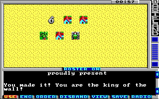

Game Tutorial Step 6: Checking for skills, attributes and items
With action class 2 you can create checks. The check action is one of the most complicated and useful action. This is one of the actions that gives your map a piece of interaction. You can create walls which are impassable but you can climb over it, or bomb it away or shovel a hole under it to get through. In this example we will create a wall which you can climb over. When you slip and fall then you get damage.
<actions actionClass="2">
<check id="0"
failMessage="4"
passMessage="5"
modifierTarget="0x1d"
modifier="-1">
<skill value="2" difficulty="2" />
<item value="0x36" difficulty="2" />
<attribute value="0x13" difficulty="2" />
</check>
</actions>
This code defines a check which displays string 5 when the check passed and string 4 when the check failed. Additionaly the modifier target 0x1d (This is the CON, see Character Data in the Wiki) is decremented by 1D6. This means you get 1-6 damage points when you fail to climb the wall.
The child elements of the check element defines which skills, items and attributes are checked. In this example the climb skill (2), a rope (0x36) and the Dexterity attribute (0x13) can be used to climb the wall. All checks have the same difficulty of 2.
With the attributes failNewActionClass and failNewAction attributes of the check tag you can change the action class and action of the square when the check failes. With passNewActionClass and passNewAction you can do the same when the check succeeds. You can also specify a newActionClass and newAction attribute on each check sub element. If one sub element uses these attributes then the passNewActionClass and passNewAction attributes are ignored because then the action class and action is changed depending on the check which had succeeded.
There are some more possible attributes for the check tag. They all default to false. Here is a list of them and what they do if you set them to true:
| passable | The square is passable even without a successfull check. |
| bypassArmor | Bypasses the armor when calculating damage. |
| damageAll | Damages all characters when the check failes. |
| party | All party members are checked instead of just the first one. |
| passAll | All party members must pass the check for the check to succeed. |
| unknown1 | A flag which is used by the game but the purpose is unknown. If you know what it does, please tell me. |
Here are the two strings for the check:
<string id="4">\rYou slip and fall...\r</string> <string id="5">\rYou made it! You are the king of the wall!\r</string>
You can download the current state of the map here: map01.xml.
